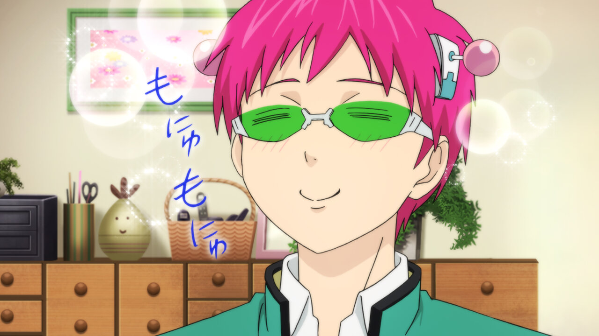

1. What is your favorite dessert?
2. What do you like to do in your free time?
3. How would you describe yourself?
4. Which value is the most important to you?
5. Which one of the following is a strength of yours?

6. How would you spend Christmas?


7. What superpower would you want to have?
8. If there's anything you could change about yourself, what would it be?
9. Are you fond of cats?
10. Do you believe in magic?
You are...
![A promotional poster for the Disastrous Life of Saiki K with a yellow and orange spiral for the background. From left to right, the characters are Saiki, Toritsuka, Yumehara, Mera, Kuniharu Saiki, Kurumi Saiki, Teruhashi, Hairo, Kaido, Nendo. Saiki has pink hair with green glasses and is wearing his green school uniform with a white button down shirt. Toritsuka has purple hair with a white headband and is wearing a his green school uniform with a dark blue shirt underneath. Yumehara has a light brown bob with a pink ribbon headband. Mera has chesnut brown hair in two braids and wears glasses. Kuniharu is Saiki's dad, wears rectangular glasses, and a dark gray button down with a burgundy tie and is waving hello. Kurumi Saiki is Saiki's mom, has a short black pixie bob with a purple sweater and is also waving hello. Teruhashi has white sparkle stars surrounding her; she has purple hair and is wearing her school uniform with a red ribbon. All of these characters have fair skin while Hairo has light tan skin. He has red hair and is pumped and showing an energetic spirit. At the front, Kaido has short blue hair and has red bandages covering his hands and is also wearing his school uniform. Finally, Nendo wears a yellow mohawk with his dark hair, has a scar on his left eye, as a significantly rounded clef chin, is holding his left fist in the air, and is wearing his school uniform with an orange shirt underneath.](assets/saiki.jpg)